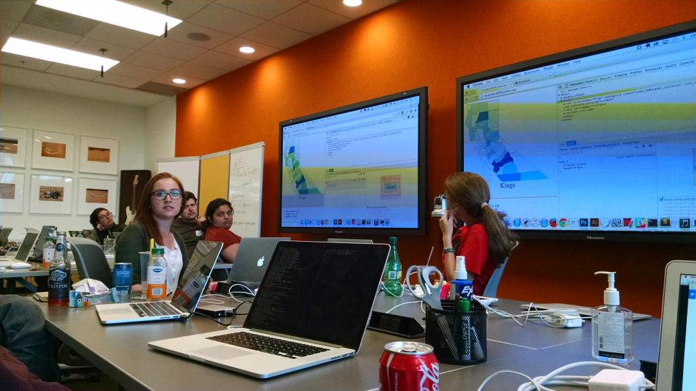

The 2015 Fellows met up in Portland, Oregon at the end of July to work on some of our open-source projects. We each brought a colleague from our host newsrooms and had a fabulous time coding things and trying as many Portland brews as possible in a three-day timespan.
Photo by Livia Labate.
My project, again, was Data Viz for All – the guidelines for accessible and mobile-friendly interactives that I started tackling a few months ago.
Today, Source published my write-up of the work Eric Sagara and I did during the code convening. Read it here.
Our goal was to start building out a library of UI components that we could use as examples within the official DVfA documentation. After that, we plan to reuse those components as the basis for a Reveal news application styleguide.
Read more about the project on Source.